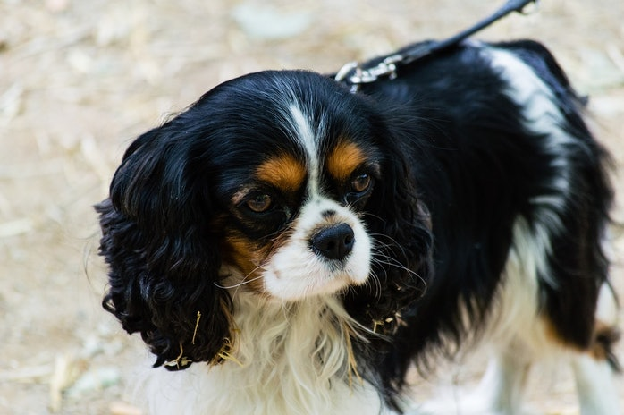

1. Cavalier King Charles Spaniel

Aside from their obvious cuteness, King Charles Spaniels can help their owners fight depression in many ways — one being that they love to cuddle. (They were the preferred lapdog breed of noble Scots back in the 1500s, and
King Charles II liked these fluffy little love machines so much that he named them after himself.) In fact, as Animal Planet put it, the Cavalier King Charles Spaniel is so cuddly, that it's been nicknamed "The Love Sponge."
On top of being super affectionate, these pups are supposedly easy to train and great with the kids, too.
Unfortunately, these little guys are particularly susceptible to heart problems, and require a lot of grooming. So before
you adopt a one of these babes, be sure you can commit to providing them with the kind of care they need to stay happy and healthy.